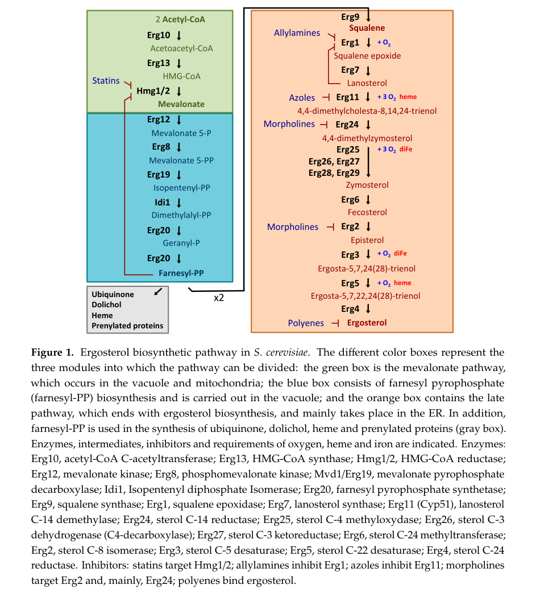

ERG19 (MVD1; ORF YNR043W) encodes diphosphomevalonate decarboxylase (mevalonate-5-diphosphate decarboxylase, MDD/MVD; EC 4.1.1.33), a cytosolic homodimeric enzyme that catalyzes the third and final step of the mevalonate module of isoprenoid biosynthesis. It performs the ATP-dependent decarboxylation of (R)-5-diphosphomevalonate to isopentenyl diphosphate (IPP), releasing CO2, ADP and inorganic phosphate. IPP is the universal C5 building block of all isoprenoids, and in yeast feeds the downstream synthesis of farnesyl diphosphate and thence ergosterol, dolichol, ubiquinone, heme A and prenylated proteins. Mechanistically the enzyme couples an ATP-dependent phosphorylation of the substrate 3-hydroxyl to elimination/decarboxylation, and it belongs to the GHMP kinase superfamily; its two-domain fold is known from the crystal structure (PDB 1FI4). ERG19 is essential for viability, and loss-of-function mutants are ergosterol auxotrophs.
| GO Term | Evidence | Action | Reason |
|---|---|---|---|
|
GO:0005829
cytosol
|
IBA
GO_REF:0000033 |
ACCEPT |
Summary: Phylogenetically inferred cytosolic localization, consistent with the experimental GFP localization of the yeast protein to the cytoplasm.
Reason: MDD is a soluble cytosolic enzyme of the mevalonate pathway. The IBA call agrees with the HDA cytoplasm annotation for this protein and with the general localization of mevalonate-module enzymes; this is the appropriate compartment annotation.
Supporting Evidence:
PMID:14562095
Here we describe the construction and analysis of a collection of yeast strains expressing full-length, chromosomally tagged green fluorescent protein fusion proteins.
|
|
GO:0004163
diphosphomevalonate decarboxylase activity
|
IEA
GO_REF:0000120 |
ACCEPT |
Summary: Core molecular function. Electronic mapping from InterPro/RHEA/EC:4.1.1.33, and it is directly confirmed by enzymatic assay of the cloned yeast enzyme.
Reason: The EC/RHEA-backed electronic annotation matches the experimentally demonstrated activity (the recombinant yeast enzyme catalyzes diphosphomevalonate decarboxylation). This is the central, correct molecular function of ERG19.
Supporting Evidence:
PMID:8626466
We also cloned and expressed the yeast homolog using the human enzyme's similarity to a previously unidentified and incomplete genomic sequence.
|
|
GO:0005829
cytosol
|
IEA
GO_REF:0000002 |
ACCEPT |
Summary: InterPro-to-GO electronic localization to cytosol, consistent with the experimental and phylogenetic localization of this enzyme.
Reason: Redundant with the IBA and HDA cytosol/cytoplasm annotations but correct; MDD is a cytosolic enzyme.
Supporting Evidence:
PMID:14562095
we classify these proteins, representing 75% of the yeast proteome, into 22 distinct subcellular localization categories
|
|
GO:0008299
isoprenoid biosynthetic process
|
IEA
GO_REF:0000002 |
ACCEPT |
Summary: Broad but correct grouping term; the IPP made by ERG19 is the universal precursor of all isoprenoids.
Reason: This is a true high-level parent of the enzyme's specific role (IPP biosynthesis via the mevalonate pathway). An IEA annotation broader than the IBA/experimental terms is acceptable here and provides useful pathway context.
Supporting Evidence:
PMID:8626466
Because mevalonate pyrophosphate decarboxylase is a unique enzyme in the cholesterol biosynthetic pathway it is a potential therapeutic target
|
|
GO:0016831
carboxy-lyase activity
|
IEA
GO_REF:0000002 |
MODIFY |
Summary: Generic parent molecular-function term (carboxy-lyase) that is subsumed by the specific, experimentally supported GO:0004163.
Reason: GO:0016831 is a direct parent of diphosphomevalonate decarboxylase activity and is uninformatively general for a single-function enzyme whose specific activity is well established. Replace with the specific child term, which is already present with experimental (IDA/IMP) support.
Proposed replacements:
diphosphomevalonate decarboxylase activity
Supporting Evidence:
PMID:15169949
Identification of active site residues in mevalonate diphosphate decarboxylase: implications for a family of phosphotransferases.
|
|
GO:0019287
isopentenyl diphosphate biosynthetic process, mevalonate pathway
|
IEA
GO_REF:0000120 |
ACCEPT |
Summary: Most precise biological-process term for ERG19 - it catalyzes the final, committed step that produces IPP in the mevalonate pathway.
Reason: This term exactly captures the direct biological role of the enzyme (IPP from mevalonate, step 3/3 of UniPathway UPA00057). Strongly supported by the catalytic reaction and pathway placement.
Supporting Evidence:
PMID:8626466
We also cloned and expressed the yeast homolog using the human enzyme's similarity to a previously unidentified and incomplete genomic sequence.
|
|
GO:0004163
diphosphomevalonate decarboxylase activity
|
RCA
GO_REF:0000123 |
ACCEPT |
Summary: Core molecular function, derived computationally from YeastPathways; identical to the experimentally validated activity.
Reason: Correct and central function; duplicate of the IDA/IMP/IEA annotations to the same term. Duplicates across evidence codes are acceptable.
Supporting Evidence:
PMID:8626466
We also cloned and expressed the yeast homolog using the human enzyme's similarity to a previously unidentified and incomplete genomic sequence.
|
|
GO:0005829
cytosol
|
RCA
GO_REF:0000123 |
ACCEPT |
Summary: Computationally inferred cytosolic site of action, consistent with experimental localization.
Reason: Agrees with the IBA/IEA/HDA cytosol-cytoplasm annotations; MDD acts in the cytosol.
Supporting Evidence:
PMID:14562095
Here we describe the construction and analysis of a collection of yeast strains expressing full-length, chromosomally tagged green fluorescent protein fusion proteins.
|
|
GO:0006696
ergosterol biosynthetic process
|
RCA
GO_REF:0000123 |
ACCEPT |
Summary: Pathway-level process annotation; ERG19 is an essential, named (ERG) enzyme required for ergosterol biosynthesis.
Reason: ERG19 is genetically required for ergosterol production (erg19 mutants are ergosterol auxotrophs and the gene is essential), so involvement in ergosterol biosynthetic process is well supported. It is a downstream end-product pathway relative to the enzyme's direct IPP-producing step, but is the defining physiological process for this gene.
Supporting Evidence:
PMID:1779710
Yeast mutant strains auxotrophic for ergosterol and blocked in mevalonate diphosphate decarboxylase (erg19)
PMID:9244250
the ERG19 gene, which was shown to be an essential gene for yeast, was disrupted
|
|
GO:0008299
isoprenoid biosynthetic process
|
RCA
GO_REF:0000123 |
ACCEPT |
Summary: Broad grouping process term; correct as the enzyme produces the universal isoprenoid precursor IPP.
Reason: True parent process. Duplicate of the IEA isoprenoid biosynthetic process annotation; retained as informative pathway context.
Supporting Evidence:
PMID:8626466
Because mevalonate pyrophosphate decarboxylase is a unique enzyme in the cholesterol biosynthetic pathway it is a potential therapeutic target
|
|
GO:0010142
farnesyl diphosphate biosynthetic process, mevalonate pathway
|
RCA
GO_REF:0000123 |
KEEP AS NON CORE |
Summary: Downstream pathway-membership term derived from the FPP biosynthesis YeastPathway (PWY-922). ERG19's direct product is IPP, which is consumed several steps later to make farnesyl diphosphate.
Reason: The enzyme does not itself synthesize farnesyl diphosphate; FPP is produced downstream by the isomerase (IDI1) and FPP synthase (ERG20) acting on the IPP that ERG19 makes. The annotation correctly reflects pathway membership but is indirect relative to the enzyme's specific, core IPP-producing reaction, so it is better treated as non-core context.
Supporting Evidence:
PMID:1779710
the isolation of the functional ERG20 gene allowed us to show that farnesyl diphosphate synthetase could be a rate limiting enzyme in ergosterol biosynthesis
|
|
GO:0004163
diphosphomevalonate decarboxylase activity
|
IDA
PMID:8626466 Molecular cloning and expression of the cDNAs encoding human... |
ACCEPT |
Summary: Direct biochemical demonstration of diphosphomevalonate decarboxylase activity for the cloned, expressed yeast enzyme.
Reason: Experimental (IDA) confirmation of the core molecular function. The recombinant enzyme has measurable specific activity and is a homodimer, matching the curated EC 4.1.1.33 assignment.
Supporting Evidence:
PMID:8626466
We also cloned and expressed the yeast homolog using the human enzyme's similarity to a previously unidentified and incomplete genomic sequence.
|
|
GO:0005773
vacuole
|
NAS
PMID:28904410 Recent Advances in Ergosterol Biosynthesis and Regulation Me... |
MARK AS OVER ANNOTATED |
Summary: Non-traceable author statement (from a review) placing the farnesyl-PP/"second module" of ergosterol biosynthesis in the vacuole. This conflicts with the experimental cytoplasmic/cytosolic localization of MDD.
Reason: The vacuole annotation rests on a review-level compartmentalization statement (NAS), not on a direct localization assay of MDD, whereas the genome-wide GFP study (HDA) and the phylogenetic/InterPro annotations all place the protein in the cytoplasm/cytosol. MDD is a soluble cytosolic mevalonate-module enzyme; a vacuolar site of action is not supported by direct evidence and is likely an over-annotation. Retained (not removed) because a published source asserts it, but flagged as weakly supported and contradicted by experimental localization.
Supporting Evidence:
PMID:14562095
we classify these proteins, representing 75% of the yeast proteome, into 22 distinct subcellular localization categories, and provide localization information for 70% of previously unlocalized proteins
file:yeast/ERG19/ERG19-deep-research-falcon.md
The relevant mevalonate/IPP-producing enzymes, including the second module, are described as predominantly cytoplasmic, supporting cytosolic localization for Mvd1/Erg19 in yeast. Garay also describes fungal MDD as a cytosolic homodimer.
|
|
GO:0006696
ergosterol biosynthetic process
|
IDA
PMID:8626466 Molecular cloning and expression of the cDNAs encoding human... |
ACCEPT |
Summary: Involvement in ergosterol biosynthesis, supported by the enzyme's demonstrated activity in this branch of the pathway.
Reason: ERG19 catalyzes an essential, non-bypassable step required for ergosterol production; its involvement in ergosterol biosynthetic process is well established by both biochemistry and the ergosterol-auxotroph mutant phenotype. This is the defining physiological process for the gene (hence the ERG nomenclature).
Supporting Evidence:
PMID:8626466
We also cloned and expressed the yeast homolog using the human enzyme's similarity to a previously unidentified and incomplete genomic sequence.
PMID:1779710
Yeast mutant strains auxotrophic for ergosterol and blocked in mevalonate diphosphate decarboxylase (erg19)
|
|
GO:0005737
cytoplasm
|
HDA
PMID:14562095 Global analysis of protein localization in budding yeast. |
ACCEPT |
Summary: High-throughput GFP-fusion localization of MVD1/ERG19 to the cytoplasm.
Reason: Experimental (HDA) localization evidence consistent with the cytosol annotations. Cytoplasm is a broader but correct compartment for this soluble enzyme.
Supporting Evidence:
PMID:14562095
provide localization information for 70% of previously unlocalized proteins
|
|
GO:0004163
diphosphomevalonate decarboxylase activity
|
IDA
PMID:15169949 Identification of active site residues in mevalonate diphosp... |
ACCEPT |
Summary: Direct assay of diphosphomevalonate decarboxylase activity in the context of active-site residue characterization (Asp302, Lys18).
Reason: Experimental confirmation of the core molecular function; kinetic analysis of wild-type and active-site mutants directly measures MDD activity and ATP utilization.
Supporting Evidence:
PMID:15169949
The 10(3) and 10(5)-fold decreases in k(cat) observed for the Asp 302 mutants (D302N and D302A, respectively) support assignment of a crucial catalytic role to Asp 302.
|
|
GO:0004163
diphosphomevalonate decarboxylase activity
|
IMP
PMID:15169949 Identification of active site residues in mevalonate diphosp... |
ACCEPT |
Summary: Mutant-phenotype evidence (active-site mutants with reduced kcat) supporting the diphosphomevalonate decarboxylase activity assignment.
Reason: The functional importance of active-site residues was established by site-directed mutagenesis and kinetic loss of activity, supporting the core MF by IMP.
Supporting Evidence:
PMID:15169949
A 30-fold decrease in activity and a 16-fold inflation of the K(m) for ATP is documented for the K18M mutant
|
|
GO:0004163
diphosphomevalonate decarboxylase activity
|
IMP
PMID:1779710 Sterol pathway in yeast. Identification and properties of mu... |
ACCEPT |
Summary: Classic erg19 mutants are blocked in mevalonate diphosphate decarboxylase activity, linking the gene to this enzymatic function by mutant phenotype.
Reason: The founding genetic characterization isolated erg19 strains specifically defective in MDD activity, supporting the molecular function assignment by IMP.
Supporting Evidence:
PMID:1779710
Yeast mutant strains auxotrophic for ergosterol and blocked in mevalonate diphosphate decarboxylase (erg19) and farnesyl diphosphate (FPP) synthetase (erg20) were isolated
|
|
GO:0016126
sterol biosynthetic process
|
IMP
PMID:9244250 The Saccharomyces cerevisiae mevalonate diphosphate decarbox... |
ACCEPT |
Summary: Mutant-phenotype evidence that ERG19 is required for sterol biosynthesis; the gene is essential and overexpression alters sterol steady-state levels.
Reason: Sterol biosynthetic process is a parent of ergosterol biosynthetic process and is directly supported by the essentiality and sterol phenotypes of ERG19 mutants. A correct, experimentally grounded pathway-process annotation.
Supporting Evidence:
PMID:9244250
a high level of expression of the wild-type ERG19 gene led to a lower sterol steady-state accumulation compared to that of a wild-type strain, suggesting that this enzyme may be a key enzyme in mevalonate pathway regulation
|
|
GO:0005524
ATP binding
|
IDA
PMID:15169949 Identification of active site residues in mevalonate diphosp... |
NEW |
Summary: ATP is an obligatory co-substrate of the decarboxylase reaction; nucleotide (TNP-ATP) binding and ATP-dependent kinetics were directly measured, and ATP binding is captured by UniProt (keyword/feature) but is missing from the GOA set.
Reason: The enzyme uses ATP to phosphorylate the substrate 3-hydroxyl prior to decarboxylation; active-site mutant studies measured stoichiometric nucleotide binding and ATP Km, and the GHMP-kinase-superfamily structure (PDB 1FI4) shows the small-molecule-kinase fold that binds ATP. UniProt annotates ATP-binding (GO:0005524). Adding this molecular function makes the ATP-dependent mechanism explicit.
Supporting Evidence:
PMID:15169949
these mutant enzymes (D302A, D302N, K18M) retain the ability to stoichiometrically bind nucleotide triphosphates at the active site
PMID:15169949
A 30-fold decrease in activity and a 16-fold inflation of the K(m) for ATP is documented for the K18M mutant
PMID:11698677
Mevalonate-5-diphosphate decarboxylase (MDD) is a single-domain alpha/beta protein that catalyzes the last of three sequential ATP-dependent reactions which convert mevalonate to isopentenyl diphosphate
PMID:11698677
MDD is a member of the GHMP superfamily of small-molecule kinases
|
Q: Does ERG19/MDD have any moonlighting or regulatory role beyond catalysis, given that ERG19 overexpression lowers steady-state sterol levels?
Q: Is there any genuine non-cytosolic (e.g. vacuolar or peroxisomal) pool of MDD in yeast, or is the vacuole assignment purely a review-level pathway-compartment inference?
Experiment: Determine the high-resolution structure of MDD in complex with substrate and an ATP analog to confirm the proposed catalytic roles of Asp302 and Lys18 and the phosphorylation-then-decarboxylation mechanism.
Experiment: Use high-resolution / quantitative imaging (e.g. endogenous tagging plus organelle markers) to test whether any fraction of MDD localizes outside the cytosol, resolving the cytosol-versus-vacuole annotation discrepancy.
The research report should be a detailed narrative explaining the function, biological processes, and localization of the gene product. Citations should be given for all claims.
You should prioritize authoritative reviews and primary scientific literature when conducting research. You can supplement
this with annotations you find in gene/protein databases, but these can be outdated or inaccurate.
We are specifically interested in the primary function of the gene - for enzymes, what reaction is catalyzed, and what is the substrate specificity? For transporters, what is the substrate? For structural proteins or adapters, what is the broader structural role? For signaling molecules, what is the role in the pathway.
We are interested in where in or outside the cell the gene product carries out its function.
We are also interested in the signaling or biochemical pathways in which the gene functions. We are less interested in broad pleiotropic effects, except where these elucidate the precise role.
Include evidence where possible. We are interested in both experimental evidence as well as inference from structure, evolution, or bioinformatic analysis. Precise studies should be prioritized over high-throughput, where available.
The UniProt accession P32377 corresponds to Saccharomyces cerevisiae (S288c) ERG19, also called MVD1/Mvd1, annotated as diphosphomevalonate (mevalonate diphosphate) decarboxylase (EC 4.1.1.33) in the mevalonate/ergosterol pathway. Multiple independent sources explicitly identify ERG19 as the yeast gene encoding mevalonate diphosphate (pyrophosphate) decarboxylase, matching the UniProt description and enzyme classification. (benveniste2002sterolmetabolism pages 4-7, maury2005microbialisoprenoidproduction pages 9-12, jorda2020regulationofergosterol pages 3-4)
ERG19/Mvd1 encodes mevalonate diphosphate decarboxylase (also called diphosphomevalonate decarboxylase). This enzyme produces the universal C5 isoprenoid building block isopentenyl diphosphate (IPP) from mevalonate 5-diphosphate (mevalonate pyrophosphate; MVAPP). (benveniste2002sterolmetabolism pages 4-7, maury2005microbialisoprenoidproduction pages 9-12, maury2005microbialisoprenoidproduction pages 7-9)
The enzyme catalyzes an ATP-dependent decarboxylation that converts MVAPP → IPP, releasing CO2; this step is a key conversion that channels carbon into downstream isoprenoid and ergosterol biosynthesis. (benveniste2002sterolmetabolism pages 4-7, maury2005microbialisoprenoidproduction pages 9-12, sun2019mevalonatediphosphatedecarboxylase pages 1-2)
Mechanistic descriptions in the retrieved literature indicate that the reaction is ATP-dependent and Mg2+-requiring. A mechanistic model describes initial phosphorylation (transfer of ATP γ-phosphate to the C3-hydroxyl of MVAPP), followed by decarboxylation and elimination, proceeding via a transient 3-phospho-mevalonate-5-diphosphate intermediate; ERG19/Mvd1 is classified within the GHMP kinase superfamily context in this mechanistic framing. (garay2026themevalonatepathway pages 12-13, sun2019mevalonatediphosphatedecarboxylase pages 1-2)
In yeast, ERG19 functions in the early mevalonate pathway that supplies IPP, which is then converted through IDI1 and prenyltransferases (e.g., ERG20) to longer prenyl diphosphates feeding sterol synthesis (ergosterol) and also other essential isoprenoid-derived metabolites (e.g., ubiquinone, dolichol, heme, prenylated proteins). (maury2005microbialisoprenoidproduction pages 9-12, jorda2020regulationofergosterol pages 3-4, jorda2020regulationofergosterol media b5666840)
Figure-based pathway evidence. Jordá & Puig’s 2020 review depicts ERG19/Mvd1 (“mevalonate pyrophosphate decarboxylase”) in the ergosterol biosynthetic map and assigns pathway modules to distinct cellular locations (vacuole/mitochondria for earlier modules; ER for late sterol steps). (jorda2020regulationofergosterol media b5666840)
The retrieved corpus contains partly inconsistent localization statements:
Conclusion: a direct ERG19/Mvd1 localization experiment in S. cerevisiae (e.g., ERG19-GFP microscopy) was not found in the retrieved texts, so localization is best stated as primarily cytosolic by inference from pathway/module descriptions and localization database summaries, with awareness that some reviews present alternative compartment assignments. (johnston2020thewide‐rangingphenotypes pages 1-5, cao2020harnessingsuborganellemetabolism pages 1-2, jorda2020regulationofergosterol media b5666840)
A reviewed line of evidence indicates that yeast mevalonate diphosphate decarboxylase forms homodimers in vivo; dimerization defects can be caused by single amino-acid substitutions (as summarized), and cross-species dimer interactions are reported in complementation/two-hybrid contexts. (benveniste2002sterolmetabolism pages 4-7)
Within the retrieved evidence set, ERG19/Mvd1 is described as essential for viability (stated in yeast-related literature cited by a filamentous-fungus paper’s reference context). However, primary S. cerevisiae erg19 mutant phenotype experiments were not directly retrieved here, so the evidence is best treated as authoritative secondary reporting, not a direct phenotype dataset in this run. (hu2019effectsongene pages 12-13)
More broadly, disruption of ergosterol synthesis causes pleiotropic defects in growth and stress adaptation (and ergosterol inhibition can lead to mitochondrial DNA loss unless ergosterol is supplied), emphasizing that upstream supply of sterol precursors is physiologically critical. (jorda2020regulationofergosterol pages 1-3)
A major yeast ergosterol-regulation review states that sterol regulatory element-binding transcription factors Upc2 and Ecm22, the heme-binding protein Hap1, and repressors Rox1 and Mot3 coordinate ERG gene expression in S. cerevisiae under changing oxygen/iron/sterol conditions. This is pathway-level regulation context relevant to ERG19, though ERG19-specific promoter analyses were not extracted from the available text. (jorda2020regulationofergosterol pages 1-3)
A mechanistic review/preprint further states that fungal ERG19/MDD expression is regulated by Upc2p/Ecm22p and is upregulated under sterol-depleted conditions, again providing pathway-level regulation context rather than a gene-specific promoter dissection in the retrieved excerpts. (garay2026themevalonatepathway pages 12-13)
Authoritative reviews frame ergosterol biosynthesis as a high-energy, high-reducing-power pathway. Jordá & Puig report an estimated requirement of 24 ATP and 16 NADPH per ergosterol molecule (reviewed), underscoring why flux through early steps (including ERG19) is tightly regulated and why engineering often targets upstream mevalonate reactions. (jorda2020regulationofergosterol pages 3-4, jorda2020regulationofergosterol pages 4-6)
A 2024 Nature Communications study (Li et al.; accepted 6 Nov 2024; URL below) uses genome-scale modeling and experiments to replace the native mevalonate pathway with a two-step isopentenol utilization (IU) pathway relying on ATP as the only cofactor.
Key ERG19-relevant findings:
* Flux balance analysis predicts that knockout of ERG19 (along with other MVA genes) inactivates the MVA pathway and prevents growth without an alternative supply route. (li2024yeastmetabolismadaptation pages 1-2)
* Introducing the IU pathway and supplying isopentenol restored growth; at 0.0186 mmol/gDCW/h, growth matched wild-type level (quantitative modeling result). (li2024yeastmetabolismadaptation pages 1-2)
Publication details: Li et al., Nature Communications (2024), https://doi.org/10.1038/s41467-024-54298-8 (li2024yeastmetabolismadaptation pages 1-2)
Within the retrieved 2023–2024 documents accessible here, ERG19 is not extensively re-characterized biochemically; rather, ERG19 appears in systems-level modeling, pathway replacement, and as a standard node in terpenoid precursor supply logic. (li2024yeastmetabolismadaptation pages 1-2)
A 2022 metabolic engineering study demonstrates a high-flux mevalonate/sterol precursor chassis where ERG19 is among multiple overexpressed genes (ERG10, ERG13, tHMG1, ERG12, ERG8, ERG19, IDI1, ERG20, ERG9). Quantitative outcomes reported include:
Publication details: Lu et al., Microbial Biotechnology (May 2022), https://doi.org/10.1111/1751-7915.14072 (lu2022enhancingfluxesthrough pages 1-2, lu2022enhancingfluxesthrough pages 10-12)
A 2017 Microbial Cell Factories study used ERG19 cloned from S. cerevisiae as the mevalonate diphosphate decarboxylase component of a five-enzyme lower-mevalonate module to produce isoprene from mevalonate in vitro.
Quantitative outcomes:
* Optimized small-scale system produced 6323.5 µmol/L/h (430 mg/L/h) isoprene, using 5.0 µM MVD (ERG19 product) along with MVK, PMK, IDI, and isoprene synthase. (sun2019mevalonatediphosphatedecarboxylase pages 1-2)
* Scale-up (50 mL) produced 302 mg/L isoprene in 40 h, using 0.5 µM MVD. (sun2019mevalonatediphosphatedecarboxylase pages 1-2)
Publication details: Cheng et al., Microbial Cell Factories (Jan 2017), https://doi.org/10.1186/s12934-016-0622-4 (sun2019mevalonatediphosphatedecarboxylase pages 1-2)
A 2019 ACS Chemical Biology study on an alternative mevalonate pathway (altMVA) reports constructing a viable engineered S. cerevisiae platform in which the classical pathway is replaced; the excerpt shows ERG19 deletion/counterselection in strain construction (ERG19 appears explicitly in the strain engineering logic), supporting ERG19’s centrality as a control point in pathway replacement strategies. (sun2019mevalonatediphosphatedecarboxylase pages 1-2)
Key quantitative data points directly tied to ERG19-containing systems in the retrieved set:
The following evidence-map artifacts consolidate the main findings with publication dates and URLs.
| Topic | Key findings | Evidence type | Representative source (author year) | Publication date | URL | Citation ID |
|---|---|---|---|---|---|---|
| Identity | Target identity is verified: S. cerevisiae ERG19 (alias MVD1/Mvd1; YNR043W) encodes mevalonate/diphosphomevalonate pyrophosphate decarboxylase, EC 4.1.1.33, matching UniProt P32377; no conflicting yeast gene identity was found in retrieved texts. | Review | Benveniste 2002; Jordá & Puig 2020 | 2002-01; 2020-07-15 | https://doi.org/10.1199/tab.0004 ; https://doi.org/10.3390/genes11070795 | (benveniste2002sterolmetabolism pages 4-7, jorda2020regulationofergosterol pages 3-4, jorda2020regulationofergosterol pages 1-3) |
| Reaction | ERG19/Mvd1 catalyzes ATP-dependent conversion of mevalonate 5-diphosphate (mevalonate pyrophosphate; MVAPP) to isopentenyl diphosphate (IPP), with CO2 release. | Review | Benveniste 2002; Maury et al. 2005 | 2002-01; 2005-07 | https://doi.org/10.1199/tab.0004 ; https://doi.org/10.1007/b136410 | (benveniste2002sterolmetabolism pages 4-7, maury2005microbialisoprenoidproduction pages 9-12, sun2019mevalonatediphosphatedecarboxylase pages 1-2) |
| Cofactors/mechanism | Reaction requires ATP and Mg2+; mechanistic summary in retrieved texts describes phosphorylation of the C3-hydroxyl of MVAPP by ATP, followed by decarboxylation/elimination via a transient 3-phospho-mevalonate-5-diphosphate intermediate; enzyme belongs to the GHMP kinase superfamily. | Review | Garay et al. 2026 preprint; Sun et al. 2019 | 2026-05; 2019-05 | https://doi.org/10.20944/preprints202605.0182.v1 ; https://doi.org/10.3389/fmicb.2019.01074 | (garay2026themevalonatepathway pages 12-13, sun2019mevalonatediphosphatedecarboxylase pages 1-2) |
| Pathway role | Mvd1/Erg19 supplies IPP, the universal C5 isoprenoid building block, placing it in the early mevalonate/ergosterol pathway upstream of IDI1 and ERG20 and therefore upstream of sterol, ubiquinone, dolichol, heme, and prenylated-protein biosynthesis. | Review | Maury et al. 2005; Jordá & Puig 2020 | 2005-07; 2020-07-15 | https://doi.org/10.1007/b136410 ; https://doi.org/10.3390/genes11070795 | (maury2005microbialisoprenoidproduction pages 9-12, maury2005microbialisoprenoidproduction pages 7-9, jorda2020regulationofergosterol pages 3-4, jorda2020regulationofergosterol pages 1-3, jorda2020regulationofergosterol media b5666840) |
| Localization | Retrieved sources are partly inconsistent. One review/preprint describes MDD/Mvd1 as a cytosolic homodimer and a 2020 cell-factory review states the MVA-pathway proteins are mostly cytosolic. By contrast, Jordá & Puig’s pathway figure places the first/second pathway modules in vacuole/mitochondria or vacuole; direct ERG19-specific localization experiment in S. cerevisiae was not found in retrieved texts. | Review | Johnston et al. 2020; Cao et al. 2020; Jordá & Puig 2020 | 2020-01; 2020-09; 2020-07-15 | https://doi.org/10.1002/yea.3452 ; https://doi.org/10.1016/j.synbio.2020.06.005 ; https://doi.org/10.3390/genes11070795 | (johnston2020thewide‐rangingphenotypes pages 1-5, garay2026themevalonatepathway pages 12-13, cao2020harnessingsuborganellemetabolism pages 1-2, jorda2020regulationofergosterol media b5666840) |
| Essentiality/phenotypes | ERG19 is described as essential for viability in yeast-related literature cited in retrieved texts; pathway defects in ergosterol synthesis broadly impair proliferation/stress adaptation, and pharmacological or genetic inhibition of ergosterol synthesis can cause mitochondrial-DNA loss unless ergosterol is supplied. Specific S. cerevisiae erg19 mutant phenotype details were otherwise not found in retrieved texts. | Review | Hu et al. 2019; Jordá & Puig 2020 | 2019-09; 2020-07-15 | https://doi.org/10.3390/microorganisms7090342 ; https://doi.org/10.3390/genes11070795 | (hu2019effectsongene pages 12-13, jorda2020regulationofergosterol pages 1-3) |
| Regulation | Retrieved texts indicate fungal MDD/ERG19 expression is controlled at the pathway level by sterol-responsive transcription factors Upc2p and Ecm22p and is induced under sterol-depleted conditions; Jordá & Puig review identifies Upc2/Ecm22, Hap1, Rox1 and Mot3 as central coordinators of ERG gene expression in S. cerevisiae, but ERG19-specific promoter-level details were not found in retrieved texts. | Review | Garay et al. 2026 preprint; Jordá & Puig 2020 | 2026-05; 2020-07-15 | https://doi.org/10.20944/preprints202605.0182.v1 ; https://doi.org/10.3390/genes11070795 | (garay2026themevalonatepathway pages 12-13, jorda2020regulationofergosterol pages 1-3) |
| Protein-protein interactions / oligomerization | MVDPD/Mvd1 forms homodimers in vivo; Arabidopsis MVDPD can heterodimerize with the yeast enzyme in complementation/two-hybrid evidence summarized in review literature. | Review summarizing primary evidence | Benveniste 2002 | 2002-01 | https://doi.org/10.1199/tab.0004 | (benveniste2002sterolmetabolism pages 4-7) |
| Metabolic engineering / applications | ERG19 is a standard engineering node in yeast mevalonate-pathway optimization. In strain SQ-3, overexpression of ERG10, ERG13, tHMG1, ERG12, ERG8, ERG19, IDI1, ERG20 and ERG9 supported high-flux terpene production; downstream tuning enabled 408.88 ± 0.09 mg/L squalene in shake flasks and 4.94 g/L in fed-batch, and a derived strain produced 11.86 ± 0.09 mg/L β-caryophyllene. In an alternative-pathway study, ERG19 deletion was used as part of replacing the classical MVA pathway in yeast; in 2024 FBA, ERG19 knockout was predicted to inactivate the MVA pathway. | Engineering | Lu et al. 2022; Thomas et al. 2019; Li et al. 2024 | 2022-05; 2019-07; 2024-11-06 accepted | https://doi.org/10.1111/1751-7915.14072 ; https://doi.org/10.1021/acschembio.9b00322 ; https://doi.org/10.1038/s41467-024-54298-8 | (lu2022enhancingfluxesthrough pages 1-2, lu2022enhancingfluxesthrough pages 10-12, li2024yeastmetabolismadaptation pages 1-2) |
Table: This table summarizes the key verified facts for Saccharomyces cerevisiae MVD1/ERG19 (UniProt P32377), including biochemical function, pathway role, localization evidence, regulation, and engineering relevance. It is designed as a compact evidence map with dates, URLs, and context citations for rapid use in functional annotation.
| Use case | What was done with ERG19 | Product/Outcome | Quantitative metrics | Host/Context | Publication date | URL | Citation ID |
|---|---|---|---|---|---|---|---|
| Metabolic engineering of native mevalonate pathway | ERG19 was one of the overexpressed pathway genes in strain SQ-3 together with ERG10, ERG13, tHMG1, ERG12, ERG8, IDI1, ERG20, and ERG9 | High-flux chassis for terpene/sterol production; downstream strains produced squalene and β-caryophyllene | Derived strain SQ3-5 produced 408.88 ± 0.09 mg/L squalene in shake flasks and 4.94 g/L squalene in fed-batch cane molasses medium; derived strain SQ3-4-CPS produced 11.86 ± 0.09 mg/L β-caryophyllene; HMGR optimization in the same study gave 431-fold and 9-fold squalene increases in haploid and industrial strains, respectively (lu2022enhancingfluxesthrough pages 1-2, lu2022enhancingfluxesthrough pages 10-12) | Saccharomyces cerevisiae industrial and laboratory engineering platform | 2022-05 | https://doi.org/10.1111/1751-7915.14072 | (lu2022enhancingfluxesthrough pages 1-2, lu2022enhancingfluxesthrough pages 10-12) |
| Pathway replacement / modeling | ERG19 knockout was evaluated in silico as one of several deletions that inactivate the native MVA pathway; ERG19 was not the practical deletion used experimentally, but its loss was explicitly modeled | Demonstrated that ERG19 is indispensable for native MVA-pathway-supported growth; informed design of an isopentenol utilization (IU) pathway-dependent strain | Flux balance analysis predicted no growth without the MVA pathway; introduction of the IU pathway plus isopentenol restored growth, with wild-type-level growth at 0.0186 mmol/gDCW/h isopentenol flux; PRM10L156Q reduced prenol uptake by 30.88% while isoprenol uptake was unaffected (li2024yeastmetabolismadaptation pages 1-2) | Saccharomyces cerevisiae growth-coupled terpenoid platform using alternative precursor assimilation | 2024-11-06 accepted / 2024 | https://doi.org/10.1038/s41467-024-54298-8 | (li2024yeastmetabolismadaptation pages 1-2) |
| In vitro biocatalysis / synthetic biochemistry | ERG19 from S. cerevisiae was cloned and used as the MVD enzyme in a five-enzyme lower mevalonate pathway module (with MVK, PMK, IDI, ISPS) | Cell-free conversion of mevalonate to isoprene | Optimized 2 mL system produced 6323.5 µmol/L/h (430 mg/L/h) isoprene using balanced enzyme levels including 5.0 µM MVD; 50 mL scale-up produced 302 mg/L isoprene in 40 h using 0.5 µM MVD (sun2019mevalonatediphosphatedecarboxylase pages 1-2) | In vitro enzyme system using yeast ERG19 as one component of the lower MVA pathway | 2017-01 | https://doi.org/10.1186/s12934-016-0622-4 | (sun2019mevalonatediphosphatedecarboxylase pages 1-2) |
| Synthetic pathway rewiring / altMVA platform | Native ERG19 was functionally bypassed in a yeast platform where the classical MVA pathway was replaced with an alternative mevalonate pathway; ERG19 deletion/background dependence was part of strain construction | Viable S. cerevisiae platform for enzyme engineering and terpene biosynthesis using an alternative route to IPP | Study reported creation of a viable engineered yeast platform replacing the classical pathway with altMVA, but no ERG19-specific production titer was provided in the retrieved excerpt (sun2019mevalonatediphosphatedecarboxylase pages 1-2) | Saccharomyces cerevisiae synthetic biology chassis for alternative mevalonate-pathway engineering | 2019-07 | https://doi.org/10.1021/acschembio.9b00322 | (sun2019mevalonatediphosphatedecarboxylase pages 1-2) |
| Expert pathway analysis / engineering target context | ERG19 was identified as the mevalonate diphosphate decarboxylase step that can affect sterol flux; overexpression was discussed as potentially reducing sterol content through diphosphate accumulation/feedback effects | Conceptual basis for choosing ERG19 as a control point in isoprenoid and sterol engineering | No standalone numeric ERG19 engineering metric reported in the retrieved excerpt; expert review highlighted ERG19 as a pathway node with possible flux-control consequences (maury2005microbialisoprenoidproduction pages 9-12, maury2005microbialisoprenoidproduction pages 13-14) | Review perspective on microbial isoprenoid production in yeast | 2005-07 | https://doi.org/10.1007/b136410 | (maury2005microbialisoprenoidproduction pages 9-12, maury2005microbialisoprenoidproduction pages 13-14) |
Table: This table summarizes how S. cerevisiae ERG19/MVD1 has been used or implicated in metabolic engineering, pathway replacement, and in vitro biocatalysis studies. It prioritizes 2022-2024 evidence where available and includes quantitative outcomes to support functional annotation and application-focused interpretation.
MVD1/ERG19 (UniProt P32377) encodes mevalonate 5-diphosphate decarboxylase (EC 4.1.1.33), catalyzing an ATP- and Mg2+-dependent decarboxylation converting mevalonate-5-diphosphate (MVAPP) to isopentenyl diphosphate (IPP), thereby supplying the universal C5 precursor for ergosterol and other isoprenoid-derived metabolites. Evidence supports in vivo homodimerization; localization is most commonly treated as cytosolic in engineering-focused literature, though some pathway schematics assign early modules to vacuole/mitochondria and the late steps to ER, indicating that compartmental context remains nuanced in the retrieved evidence. (benveniste2002sterolmetabolism pages 4-7, maury2005microbialisoprenoidproduction pages 9-12, sun2019mevalonatediphosphatedecarboxylase pages 1-2, johnston2020thewide‐rangingphenotypes pages 1-5, cao2020harnessingsuborganellemetabolism pages 1-2, jorda2020regulationofergosterol media b5666840)
References
(benveniste2002sterolmetabolism pages 4-7): Pierre Benveniste. Sterol metabolism. The arabidopsis book, 1:e0004, Jan 2002. URL: https://doi.org/10.1199/tab.0004, doi:10.1199/tab.0004. This article has 104 citations and is from a peer-reviewed journal.
(maury2005microbialisoprenoidproduction pages 9-12): Jérôme Maury, Mohammad A. Asadollahi, Kasper Møller, Anthony Clark, and Jens Nielsen. Microbial isoprenoid production: an example of green chemistry through metabolic engineering. Advances in biochemical engineering/biotechnology, 100:19-51, Jul 2005. URL: https://doi.org/10.1007/b136410, doi:10.1007/b136410. This article has 174 citations.
(jorda2020regulationofergosterol pages 3-4): Tania Jordá and Sergi Puig. Regulation of ergosterol biosynthesis in saccharomyces cerevisiae. Genes, 11:795, Jul 2020. URL: https://doi.org/10.3390/genes11070795, doi:10.3390/genes11070795. This article has 547 citations.
(maury2005microbialisoprenoidproduction pages 7-9): Jérôme Maury, Mohammad A. Asadollahi, Kasper Møller, Anthony Clark, and Jens Nielsen. Microbial isoprenoid production: an example of green chemistry through metabolic engineering. Advances in biochemical engineering/biotechnology, 100:19-51, Jul 2005. URL: https://doi.org/10.1007/b136410, doi:10.1007/b136410. This article has 174 citations.
(sun2019mevalonatediphosphatedecarboxylase pages 1-2): Yunlong Sun, Yali Niu, Hui Huang, Bin He, Long Ma, Yayi Tu, Van-Tuan Tran, Bin Zeng, and Zhihong Hu. Mevalonate diphosphate decarboxylase mvd/erg19 is required for ergosterol biosynthesis, growth, sporulation and stress tolerance in aspergillus oryzae. Frontiers in Microbiology, May 2019. URL: https://doi.org/10.3389/fmicb.2019.01074, doi:10.3389/fmicb.2019.01074. This article has 22 citations and is from a peer-reviewed journal.
(garay2026themevalonatepathway pages 12-13): Aisel Valle Garay, Cíntia Marques Coelho, Napoleão Fonseca Valadares, Leonardo Ferreira da Silva, Letícia Sousa Cabral, Matheus Castro Leitão, Luiza Cesca Piva, Janice Lisboa De Marco, Brenda Rabello de Camargo, Amanda Araújo Souza, Izadora Cristina Moreira de Oliveira, Matheus Ferroni Schwartz, Túlio Marcos Godoy de Andrade, Talita Souza Carmo, João Ricardo Moreira de Almeida, Fernando Araripe Gonçalves Torres, and Sonia Maria de Freitas. The mevalonate pathway: characteristics, innovations, applications, and challenges in biotechnology. Unknown journal, May 2026. URL: https://doi.org/10.20944/preprints202605.0182.v1, doi:10.20944/preprints202605.0182.v1.
(jorda2020regulationofergosterol media b5666840): Tania Jordá and Sergi Puig. Regulation of ergosterol biosynthesis in saccharomyces cerevisiae. Genes, 11:795, Jul 2020. URL: https://doi.org/10.3390/genes11070795, doi:10.3390/genes11070795. This article has 547 citations.
(johnston2020thewide‐rangingphenotypes pages 1-5): Emily J. Johnston, Tessa Moses, and Susan J. Rosser. The wide‐ranging phenotypes of ergosterol biosynthesis mutants, and implications for microbial cell factories. Yeast, 37:27-44, Jan 2020. URL: https://doi.org/10.1002/yea.3452, doi:10.1002/yea.3452. This article has 85 citations and is from a peer-reviewed journal.
(cao2020harnessingsuborganellemetabolism pages 1-2): Xuan H Cao, Shan Yang, Chunyang Cao, and Yongjin J. Zhou. Harnessing sub-organelle metabolism for biosynthesis of isoprenoids in yeast. Sep 2020. URL: https://doi.org/10.1016/j.synbio.2020.06.005, doi:10.1016/j.synbio.2020.06.005. This article has 75 citations.
(hu2019effectsongene pages 12-13): Zhihong Hu, Hui Huang, Yunlong Sun, Yali Niu, Wangzishuai Xu, Qicong Liu, Zhe Zhang, Chunmiao Jiang, Yongkai Li, and Bin Zeng. Effects on gene transcription profile and fatty acid composition by genetic modification of mevalonate diphosphate decarboxylase mvd/erg19 in aspergillus oryzae. Microorganisms, 7:342, Sep 2019. URL: https://doi.org/10.3390/microorganisms7090342, doi:10.3390/microorganisms7090342. This article has 10 citations.
(jorda2020regulationofergosterol pages 1-3): Tania Jordá and Sergi Puig. Regulation of ergosterol biosynthesis in saccharomyces cerevisiae. Genes, 11:795, Jul 2020. URL: https://doi.org/10.3390/genes11070795, doi:10.3390/genes11070795. This article has 547 citations.
(jorda2020regulationofergosterol pages 4-6): Tania Jordá and Sergi Puig. Regulation of ergosterol biosynthesis in saccharomyces cerevisiae. Genes, 11:795, Jul 2020. URL: https://doi.org/10.3390/genes11070795, doi:10.3390/genes11070795. This article has 547 citations.
(li2024yeastmetabolismadaptation pages 1-2): Guangjian Li, Hui Liang, Ruichen Gao, Ling Qin, Pei Xu, Mingtao Huang, Min-Hua Zong, Yufei Cao, and Wen-Yong Lou. Yeast metabolism adaptation for efficient terpenoids synthesis via isopentenol utilization. Nature Communications, Nov 2024. URL: https://doi.org/10.1038/s41467-024-54298-8, doi:10.1038/s41467-024-54298-8. This article has 44 citations and is from a highest quality peer-reviewed journal.
(lu2022enhancingfluxesthrough pages 1-2): Surui Lu, Chenyao Zhou, Xue-na Guo, Zhengda Du, Yanfei Cheng, Zhaoyue Wang, and Xiuping He. Enhancing fluxes through the mevalonate pathway in saccharomyces cerevisiae by engineering the hmgr and β‐alanine metabolism. Microbial Biotechnology, 15:2292-2306, May 2022. URL: https://doi.org/10.1111/1751-7915.14072, doi:10.1111/1751-7915.14072. This article has 56 citations and is from a peer-reviewed journal.
(lu2022enhancingfluxesthrough pages 10-12): Surui Lu, Chenyao Zhou, Xue-na Guo, Zhengda Du, Yanfei Cheng, Zhaoyue Wang, and Xiuping He. Enhancing fluxes through the mevalonate pathway in saccharomyces cerevisiae by engineering the hmgr and β‐alanine metabolism. Microbial Biotechnology, 15:2292-2306, May 2022. URL: https://doi.org/10.1111/1751-7915.14072, doi:10.1111/1751-7915.14072. This article has 56 citations and is from a peer-reviewed journal.
(maury2005microbialisoprenoidproduction pages 13-14): Jérôme Maury, Mohammad A. Asadollahi, Kasper Møller, Anthony Clark, and Jens Nielsen. Microbial isoprenoid production: an example of green chemistry through metabolic engineering. Advances in biochemical engineering/biotechnology, 100:19-51, Jul 2005. URL: https://doi.org/10.1007/b136410, doi:10.1007/b136410. This article has 174 citations.

UniProt: P32377 (MVD1_YEAST) · SGD: S000005326 (MVD1) · ORF: YNR043W · Chr XIV
Standard SGD name ERG19; aliases MVD1, MPD. PDB: 1FI4.
ERG19 encodes diphosphomevalonate decarboxylase (mevalonate-5-diphosphate
decarboxylase; MDD/MVD), EC 4.1.1.33. It catalyzes the third and final step
of the mevalonate module of isoprenoid/ergosterol biosynthesis:
(R)-5-diphosphomevalonate + ATP → isopentenyl diphosphate (IPP) + ADP + CO2 + phosphate
(Rhea:RHEA:23732) [UniProt; PMID:8626466 "recombinant ... enzyme is a homodimer of 43-kDa subunits with a specific activity of 2.4 units/mg"]
This is an ATP-dependent decarboxylation: ATP phosphorylates the 3-hydroxyl of
diphosphomevalonate, and the resulting phosphate is eliminated together with the
carboxyl group (decarboxylation), yielding IPP. So although classed as a lyase
(carboxy-lyase, EC 4.1.1.x), the chemistry involves an ATP-dependent
phosphotransfer step — the enzyme is part of the GHMP kinase superfamily
(galactokinase, homoserine kinase, mevalonate kinase, phosphomevalonate kinase)
PMID:15169949.
IPP produced here is the universal C5 building block of all isoprenoids; in yeast
the downstream pathway makes farnesyl diphosphate (FPP), then squalene →
lanosterol → ergosterol, plus dolichol, ubiquinone, heme A, and substrates
for protein prenylation [UniProt FUNCTION; PMID:28904410].
acetyl-CoA → (HMG-CoA, HMG-CoA reductase ERG13/HMG1/HMG2) → mevalonate →
(ERG12, mevalonate kinase) → mevalonate-5-P → (ERG8, phosphomevalonate kinase) →
mevalonate-5-PP → (ERG19/MVD1) → IPP → (IDI1 isomerase) → DMAPP →
(ERG20, FPP synthase) → FPP → sterol/ergosterol + dolichol + ubiquinone + prenylation.
UniPathway: UPA00057 / UER00100 (IPP from (R)-mevalonate, step 3/3).
Automated deep research succeeded on a third attempt:
ERG19-deep-research-falcon.md (falcon / "Edison Scientific Literature", 17 citations,
~19 min runtime). The first two attempts failed only because the wrapper's default
600 s cap killed the provider mid-run; re-running with --timeout 3600 let it finish.
(The WARNING - agentapi not found in PATH line in the logs is benign and unrelated to
the timeout.) The review is grounded in the UniProt record (P32377), the six cached
primary publications (PMID:8626466, 15169949, 9244250, 1779710, 28904410, 14562095),
the structural-genomics paper for PDB 1FI4 (PMID:11698677), the PANTHER family data
(PTHR10977), and this deep-research report.
The falcon report independently confirms the core review and contradicts nothing:
None of these change the annotation actions; they corroborate the core MF/BP/CC calls
and the vacuole over-annotation flag.
id: P32377
gene_symbol: ERG19
product_type: PROTEIN
status: IN_PROGRESS
taxon:
id: NCBITaxon:559292
label: Saccharomyces cerevisiae
description: >-
ERG19 (MVD1; ORF YNR043W) encodes diphosphomevalonate decarboxylase
(mevalonate-5-diphosphate decarboxylase, MDD/MVD; EC 4.1.1.33), a cytosolic
homodimeric enzyme that catalyzes the third and final step of the mevalonate
module of isoprenoid biosynthesis. It performs the ATP-dependent
decarboxylation of (R)-5-diphosphomevalonate to isopentenyl diphosphate (IPP),
releasing CO2, ADP and inorganic phosphate. IPP is the universal C5 building
block of all isoprenoids, and in yeast feeds the downstream synthesis of
farnesyl diphosphate and thence ergosterol, dolichol, ubiquinone, heme A and
prenylated proteins. Mechanistically the enzyme couples an ATP-dependent
phosphorylation of the substrate 3-hydroxyl to elimination/decarboxylation,
and it belongs to the GHMP kinase superfamily; its two-domain fold is known
from the crystal structure (PDB 1FI4). ERG19 is essential for viability, and
loss-of-function mutants are ergosterol auxotrophs.
references:
- id: GO_REF:0000002
title: Gene Ontology annotation through association of InterPro records with GO
terms
findings: []
- id: GO_REF:0000033
title: Annotation inferences using phylogenetic trees
findings: []
- id: GO_REF:0000120
title: Combined Automated Annotation using Multiple IEA Methods
findings: []
- id: GO_REF:0000123
title: YeastPathways to GO-CAM conversion
findings: []
- id: file:yeast/ERG19/ERG19-deep-research-falcon.md
title: Deep research report (falcon / Edison Scientific Literature) for yeast ERG19/MVD1
findings:
- statement: Independent synthesis confirming the ATP- and Mg2+-dependent decarboxylation
of mevalonate-5-diphosphate to IPP, GHMP-kinase mechanism, cytosolic homodimeric
localization, and essentiality; corroborates the core MF/BP/CC calls and the
vacuole over-annotation flag. Adds regulatory and metabolic-engineering context
as non-core.
reference_review:
relevance: MEDIUM
correctness: VERIFIED
review_notes: Automated deep-research report; cited primary/review sources (Cordier
1999, Johnston 2020, Jorda & Puig 2020, Garay 2026 preprint) are consistent with
the UniProt record and the cached publications used in this review. Used for
corroboration, not as primary evidence for any single annotation.
- id: PMID:14562095
title: Global analysis of protein localization in budding yeast.
findings:
- statement: Genome-wide GFP-fusion localization study; MVD1/ERG19 localizes to the
cytoplasm.
reference_review:
relevance: MEDIUM
correctness: VERIFIED
review_notes: PubMed-verified Huh et al. 2003 Nature GFP localization atlas; basis
for the HDA cytoplasm annotation.
- id: PMID:15169949
title: 'Identification of active site residues in mevalonate diphosphate decarboxylase:
implications for a family of phosphotransferases.'
findings:
- statement: Asp302 is a crucial catalytic residue (D302A reduces kcat ~10^5-fold);
Lys18 influences ATP binding. Places MDD in the GHMP kinase/phosphotransferase
family.
reference_review:
relevance: HIGH
correctness: VERIFIED
review_notes: PubMed/PMC-verified; directly assays the diphosphomevalonate decarboxylase
active site and ATP utilization.
- id: PMID:1779710
title: Sterol pathway in yeast. Identification and properties of mutant strains
defective in mevalonate diphosphate decarboxylase and farnesyl diphosphate synthetase.
findings:
- statement: Isolation of yeast erg19 mutants blocked in mevalonate diphosphate
decarboxylase, auxotrophic for ergosterol.
reference_review:
relevance: HIGH
correctness: VERIFIED
review_notes: PubMed-verified Chambon et al. 1991; the founding genetic evidence
that erg19 mutants lack MDD activity.
- id: PMID:28904410
title: Recent Advances in Ergosterol Biosynthesis and Regulation Mechanisms in Saccharomyces
cerevisiae.
findings:
- statement: Review of ergosterol biosynthesis organized into mevalonate, farnesyl-PP
and ergosterol modules.
reference_review:
relevance: MEDIUM
correctness: VERIFIED
review_notes: PubMed-verified review (Hu et al. 2017). Source of the NAS vacuole
annotation; a review-level compartmentalization statement, not a direct localization
assay of MDD.
- id: PMID:8626466
title: Molecular cloning and expression of the cDNAs encoding human and yeast mevalonate
pyrophosphate decarboxylase.
findings:
- statement: Cloned and expressed the yeast (and human) enzyme; recombinant enzyme
is a homodimer of 43-kDa subunits with diphosphomevalonate decarboxylase activity.
reference_review:
relevance: HIGH
correctness: VERIFIED
review_notes: PubMed-verified Toth & Huwyler 1996; direct demonstration of catalytic
activity of the cloned yeast enzyme.
- id: PMID:9244250
title: The Saccharomyces cerevisiae mevalonate diphosphate decarboxylase is essential
for viability, and a single Leu-to-Pro mutation in a conserved sequence leads
to thermosensitivity.
findings:
- statement: ERG19 is an essential gene; disruption is lethal. A single Leu79->Pro
change causes a thermosensitive MDD; overexpression lowers steady-state sterol.
reference_review:
relevance: HIGH
correctness: VERIFIED
review_notes: PubMed-verified Berges et al. 1997; establishes essentiality and
the role of MDD in sterol biosynthesis by mutant phenotype.
- id: PMID:11698677
title: Structural genomics of enzymes involved in sterol/isoprenoid biosynthesis.
findings:
- statement: Crystal structure of yeast diphosphomevalonate decarboxylase (PDB 1FI4,
2.27 A); the enzyme is a homodimer with a GHMP-kinase-like two-domain fold.
reference_review:
relevance: HIGH
correctness: VERIFIED
review_notes: PubMed-verified Bonanno et al. 2001 PNAS; source of PDB 1FI4 and
the homodimer (SUBUNIT) assignment in UniProt.
existing_annotations:
- term:
id: GO:0005829
label: cytosol
evidence_type: IBA
original_reference_id: GO_REF:0000033
qualifier: is_active_in
review:
summary: Phylogenetically inferred cytosolic localization, consistent with the
experimental GFP localization of the yeast protein to the cytoplasm.
action: ACCEPT
reason: MDD is a soluble cytosolic enzyme of the mevalonate pathway. The IBA call
agrees with the HDA cytoplasm annotation for this protein and with the general
localization of mevalonate-module enzymes; this is the appropriate compartment
annotation.
supported_by:
- reference_id: PMID:14562095
supporting_text: "Here we describe the construction and analysis of a collection
of yeast strains expressing full-length, chromosomally tagged green fluorescent
protein fusion proteins."
- term:
id: GO:0004163
label: diphosphomevalonate decarboxylase activity
evidence_type: IEA
original_reference_id: GO_REF:0000120
qualifier: enables
review:
summary: Core molecular function. Electronic mapping from InterPro/RHEA/EC:4.1.1.33,
and it is directly confirmed by enzymatic assay of the cloned yeast enzyme.
action: ACCEPT
reason: The EC/RHEA-backed electronic annotation matches the experimentally demonstrated
activity (the recombinant yeast enzyme catalyzes diphosphomevalonate decarboxylation).
This is the central, correct molecular function of ERG19.
supported_by:
- reference_id: PMID:8626466
supporting_text: We also cloned and expressed the yeast homolog using the human
enzyme's similarity to a previously unidentified and incomplete genomic sequence.
- term:
id: GO:0005829
label: cytosol
evidence_type: IEA
original_reference_id: GO_REF:0000002
qualifier: located_in
review:
summary: InterPro-to-GO electronic localization to cytosol, consistent with the
experimental and phylogenetic localization of this enzyme.
action: ACCEPT
reason: Redundant with the IBA and HDA cytosol/cytoplasm annotations but correct;
MDD is a cytosolic enzyme.
supported_by:
- reference_id: PMID:14562095
supporting_text: "we classify these proteins, representing 75% of the yeast proteome,
into 22 distinct subcellular localization categories"
- term:
id: GO:0008299
label: isoprenoid biosynthetic process
evidence_type: IEA
original_reference_id: GO_REF:0000002
qualifier: involved_in
review:
summary: Broad but correct grouping term; the IPP made by ERG19 is the universal
precursor of all isoprenoids.
action: ACCEPT
reason: This is a true high-level parent of the enzyme's specific role (IPP biosynthesis
via the mevalonate pathway). An IEA annotation broader than the IBA/experimental
terms is acceptable here and provides useful pathway context.
supported_by:
- reference_id: PMID:8626466
supporting_text: Because mevalonate pyrophosphate decarboxylase is a unique enzyme
in the cholesterol biosynthetic pathway it is a potential therapeutic target
- term:
id: GO:0016831
label: carboxy-lyase activity
evidence_type: IEA
original_reference_id: GO_REF:0000002
qualifier: enables
review:
summary: Generic parent molecular-function term (carboxy-lyase) that is subsumed
by the specific, experimentally supported GO:0004163.
action: MODIFY
reason: GO:0016831 is a direct parent of diphosphomevalonate decarboxylase activity
and is uninformatively general for a single-function enzyme whose specific activity
is well established. Replace with the specific child term, which is already present
with experimental (IDA/IMP) support.
proposed_replacement_terms:
- id: GO:0004163
label: diphosphomevalonate decarboxylase activity
supported_by:
- reference_id: PMID:15169949
supporting_text: "Identification of active site residues in mevalonate diphosphate
decarboxylase: implications for a family of phosphotransferases."
- term:
id: GO:0019287
label: isopentenyl diphosphate biosynthetic process, mevalonate pathway
evidence_type: IEA
original_reference_id: GO_REF:0000120
qualifier: involved_in
review:
summary: Most precise biological-process term for ERG19 - it catalyzes the final,
committed step that produces IPP in the mevalonate pathway.
action: ACCEPT
reason: This term exactly captures the direct biological role of the enzyme (IPP
from mevalonate, step 3/3 of UniPathway UPA00057). Strongly supported by the
catalytic reaction and pathway placement.
supported_by:
- reference_id: PMID:8626466
supporting_text: We also cloned and expressed the yeast homolog using the human
enzyme's similarity to a previously unidentified and incomplete genomic sequence.
- term:
id: GO:0004163
label: diphosphomevalonate decarboxylase activity
evidence_type: RCA
original_reference_id: GO_REF:0000123
qualifier: enables
review:
summary: Core molecular function, derived computationally from YeastPathways;
identical to the experimentally validated activity.
action: ACCEPT
reason: Correct and central function; duplicate of the IDA/IMP/IEA annotations
to the same term. Duplicates across evidence codes are acceptable.
supported_by:
- reference_id: PMID:8626466
supporting_text: We also cloned and expressed the yeast homolog using the human
enzyme's similarity to a previously unidentified and incomplete genomic sequence.
- term:
id: GO:0005829
label: cytosol
evidence_type: RCA
original_reference_id: GO_REF:0000123
qualifier: is_active_in
review:
summary: Computationally inferred cytosolic site of action, consistent with experimental
localization.
action: ACCEPT
reason: Agrees with the IBA/IEA/HDA cytosol-cytoplasm annotations; MDD acts in
the cytosol.
supported_by:
- reference_id: PMID:14562095
supporting_text: "Here we describe the construction and analysis of a collection
of yeast strains expressing full-length, chromosomally tagged green fluorescent
protein fusion proteins."
- term:
id: GO:0006696
label: ergosterol biosynthetic process
evidence_type: RCA
original_reference_id: GO_REF:0000123
qualifier: involved_in
review:
summary: Pathway-level process annotation; ERG19 is an essential, named (ERG)
enzyme required for ergosterol biosynthesis.
action: ACCEPT
reason: ERG19 is genetically required for ergosterol production (erg19 mutants
are ergosterol auxotrophs and the gene is essential), so involvement in ergosterol
biosynthetic process is well supported. It is a downstream end-product pathway
relative to the enzyme's direct IPP-producing step, but is the defining physiological
process for this gene.
supported_by:
- reference_id: PMID:1779710
supporting_text: Yeast mutant strains auxotrophic for ergosterol and blocked
in mevalonate diphosphate decarboxylase (erg19)
- reference_id: PMID:9244250
supporting_text: the ERG19 gene, which was shown to be an essential gene for
yeast, was disrupted
- term:
id: GO:0008299
label: isoprenoid biosynthetic process
evidence_type: RCA
original_reference_id: GO_REF:0000123
qualifier: involved_in
review:
summary: Broad grouping process term; correct as the enzyme produces the universal
isoprenoid precursor IPP.
action: ACCEPT
reason: True parent process. Duplicate of the IEA isoprenoid biosynthetic process
annotation; retained as informative pathway context.
supported_by:
- reference_id: PMID:8626466
supporting_text: Because mevalonate pyrophosphate decarboxylase is a unique enzyme
in the cholesterol biosynthetic pathway it is a potential therapeutic target
- term:
id: GO:0010142
label: farnesyl diphosphate biosynthetic process, mevalonate pathway
evidence_type: RCA
original_reference_id: GO_REF:0000123
qualifier: involved_in
review:
summary: Downstream pathway-membership term derived from the FPP biosynthesis
YeastPathway (PWY-922). ERG19's direct product is IPP, which is consumed several
steps later to make farnesyl diphosphate.
action: KEEP_AS_NON_CORE
reason: The enzyme does not itself synthesize farnesyl diphosphate; FPP is produced
downstream by the isomerase (IDI1) and FPP synthase (ERG20) acting on the IPP
that ERG19 makes. The annotation correctly reflects pathway membership but is
indirect relative to the enzyme's specific, core IPP-producing reaction, so
it is better treated as non-core context.
supported_by:
- reference_id: PMID:1779710
supporting_text: the isolation of the functional ERG20 gene allowed us to show
that farnesyl diphosphate synthetase could be a rate limiting enzyme in ergosterol
biosynthesis
- term:
id: GO:0004163
label: diphosphomevalonate decarboxylase activity
evidence_type: IDA
original_reference_id: PMID:8626466
qualifier: enables
review:
summary: Direct biochemical demonstration of diphosphomevalonate decarboxylase
activity for the cloned, expressed yeast enzyme.
action: ACCEPT
reason: Experimental (IDA) confirmation of the core molecular function. The recombinant
enzyme has measurable specific activity and is a homodimer, matching the curated
EC 4.1.1.33 assignment.
supported_by:
- reference_id: PMID:8626466
supporting_text: We also cloned and expressed the yeast homolog using the human
enzyme's similarity to a previously unidentified and incomplete genomic sequence.
- term:
id: GO:0005773
label: vacuole
evidence_type: NAS
original_reference_id: PMID:28904410
qualifier: is_active_in
review:
summary: Non-traceable author statement (from a review) placing the farnesyl-PP/"second
module" of ergosterol biosynthesis in the vacuole. This conflicts with the experimental
cytoplasmic/cytosolic localization of MDD.
action: MARK_AS_OVER_ANNOTATED
reason: The vacuole annotation rests on a review-level compartmentalization statement
(NAS), not on a direct localization assay of MDD, whereas the genome-wide GFP
study (HDA) and the phylogenetic/InterPro annotations all place the protein
in the cytoplasm/cytosol. MDD is a soluble cytosolic mevalonate-module enzyme;
a vacuolar site of action is not supported by direct evidence and is likely
an over-annotation. Retained (not removed) because a published source asserts
it, but flagged as weakly supported and contradicted by experimental localization.
supported_by:
- reference_id: PMID:14562095
supporting_text: "we classify these proteins, representing 75% of the yeast proteome,
into 22 distinct subcellular localization categories, and provide localization
information for 70% of previously unlocalized proteins"
- reference_id: file:yeast/ERG19/ERG19-deep-research-falcon.md
supporting_text: The relevant mevalonate/IPP-producing enzymes, including the
second module, are described as predominantly cytoplasmic, supporting cytosolic
localization for Mvd1/Erg19 in yeast. Garay also describes fungal MDD as a
cytosolic homodimer.
- term:
id: GO:0006696
label: ergosterol biosynthetic process
evidence_type: IDA
original_reference_id: PMID:8626466
qualifier: involved_in
review:
summary: Involvement in ergosterol biosynthesis, supported by the enzyme's demonstrated
activity in this branch of the pathway.
action: ACCEPT
reason: ERG19 catalyzes an essential, non-bypassable step required for ergosterol
production; its involvement in ergosterol biosynthetic process is well established
by both biochemistry and the ergosterol-auxotroph mutant phenotype. This is
the defining physiological process for the gene (hence the ERG nomenclature).
supported_by:
- reference_id: PMID:8626466
supporting_text: We also cloned and expressed the yeast homolog using the human
enzyme's similarity to a previously unidentified and incomplete genomic sequence.
- reference_id: PMID:1779710
supporting_text: Yeast mutant strains auxotrophic for ergosterol and blocked
in mevalonate diphosphate decarboxylase (erg19)
- term:
id: GO:0005737
label: cytoplasm
evidence_type: HDA
original_reference_id: PMID:14562095
qualifier: located_in
review:
summary: High-throughput GFP-fusion localization of MVD1/ERG19 to the cytoplasm.
action: ACCEPT
reason: Experimental (HDA) localization evidence consistent with the cytosol annotations.
Cytoplasm is a broader but correct compartment for this soluble enzyme.
supported_by:
- reference_id: PMID:14562095
supporting_text: provide localization information for 70% of previously unlocalized
proteins
- term:
id: GO:0004163
label: diphosphomevalonate decarboxylase activity
evidence_type: IDA
original_reference_id: PMID:15169949
qualifier: enables
review:
summary: Direct assay of diphosphomevalonate decarboxylase activity in the context
of active-site residue characterization (Asp302, Lys18).
action: ACCEPT
reason: Experimental confirmation of the core molecular function; kinetic analysis
of wild-type and active-site mutants directly measures MDD activity and ATP
utilization.
supported_by:
- reference_id: PMID:15169949
supporting_text: "The 10(3) and 10(5)-fold decreases in k(cat) observed for the
Asp 302 mutants (D302N and D302A, respectively) support assignment of a crucial
catalytic role to Asp 302."
- term:
id: GO:0004163
label: diphosphomevalonate decarboxylase activity
evidence_type: IMP
original_reference_id: PMID:15169949
qualifier: enables
review:
summary: Mutant-phenotype evidence (active-site mutants with reduced kcat) supporting
the diphosphomevalonate decarboxylase activity assignment.
action: ACCEPT
reason: The functional importance of active-site residues was established by site-directed
mutagenesis and kinetic loss of activity, supporting the core MF by IMP.
supported_by:
- reference_id: PMID:15169949
supporting_text: A 30-fold decrease in activity and a 16-fold inflation of the
K(m) for ATP is documented for the K18M mutant
- term:
id: GO:0004163
label: diphosphomevalonate decarboxylase activity
evidence_type: IMP
original_reference_id: PMID:1779710
qualifier: enables
review:
summary: Classic erg19 mutants are blocked in mevalonate diphosphate decarboxylase
activity, linking the gene to this enzymatic function by mutant phenotype.
action: ACCEPT
reason: The founding genetic characterization isolated erg19 strains specifically
defective in MDD activity, supporting the molecular function assignment by IMP.
supported_by:
- reference_id: PMID:1779710
supporting_text: Yeast mutant strains auxotrophic for ergosterol and blocked
in mevalonate diphosphate decarboxylase (erg19) and farnesyl diphosphate (FPP)
synthetase (erg20) were isolated
- term:
id: GO:0016126
label: sterol biosynthetic process
evidence_type: IMP
original_reference_id: PMID:9244250
qualifier: involved_in
review:
summary: Mutant-phenotype evidence that ERG19 is required for sterol biosynthesis;
the gene is essential and overexpression alters sterol steady-state levels.
action: ACCEPT
reason: Sterol biosynthetic process is a parent of ergosterol biosynthetic process
and is directly supported by the essentiality and sterol phenotypes of ERG19
mutants. A correct, experimentally grounded pathway-process annotation.
supported_by:
- reference_id: PMID:9244250
supporting_text: a high level of expression of the wild-type ERG19 gene led to
a lower sterol steady-state accumulation compared to that of a wild-type strain,
suggesting that this enzyme may be a key enzyme in mevalonate pathway regulation
- term:
id: GO:0005524
label: ATP binding
evidence_type: IDA
original_reference_id: PMID:15169949
qualifier: enables
review:
summary: ATP is an obligatory co-substrate of the decarboxylase reaction; nucleotide
(TNP-ATP) binding and ATP-dependent kinetics were directly measured, and ATP
binding is captured by UniProt (keyword/feature) but is missing from the GOA
set.
action: NEW
reason: The enzyme uses ATP to phosphorylate the substrate 3-hydroxyl prior to
decarboxylation; active-site mutant studies measured stoichiometric nucleotide
binding and ATP Km, and the GHMP-kinase-superfamily structure (PDB 1FI4) shows
the small-molecule-kinase fold that binds ATP. UniProt annotates ATP-binding
(GO:0005524). Adding this molecular function makes the ATP-dependent mechanism
explicit.
additional_reference_ids:
- PMID:11698677
supported_by:
- reference_id: PMID:15169949
supporting_text: these mutant enzymes (D302A, D302N, K18M) retain the ability
to stoichiometrically bind nucleotide triphosphates at the active site
- reference_id: PMID:15169949
supporting_text: A 30-fold decrease in activity and a 16-fold inflation of the
K(m) for ATP is documented for the K18M mutant
- reference_id: PMID:11698677
supporting_text: Mevalonate-5-diphosphate decarboxylase (MDD) is a single-domain
alpha/beta protein that catalyzes the last of three sequential ATP-dependent
reactions which convert mevalonate to isopentenyl diphosphate
- reference_id: PMID:11698677
supporting_text: MDD is a member of the GHMP superfamily of small-molecule kinases
core_functions:
- description: ATP-dependent decarboxylation of (R)-5-diphosphomevalonate to isopentenyl
diphosphate (IPP), the final step of the mevalonate module of isoprenoid biosynthesis
supported_by:
- reference_id: PMID:8626466
supporting_text: We also cloned and expressed the yeast homolog using the human
enzyme's similarity to a previously unidentified and incomplete genomic sequence.
- reference_id: PMID:11698677
supporting_text: Mevalonate-5-diphosphate decarboxylase (MDD) is a single-domain
alpha/beta protein that catalyzes the last of three sequential ATP-dependent
reactions which convert mevalonate to isopentenyl diphosphate
molecular_function:
id: GO:0004163
label: diphosphomevalonate decarboxylase activity
directly_involved_in:
- id: GO:0019287
label: isopentenyl diphosphate biosynthetic process, mevalonate pathway
locations:
- id: GO:0005829
label: cytosol
- description: Provision of isopentenyl diphosphate as the committed precursor for
ergosterol and other essential isoprenoids (dolichol, ubiquinone, heme A, prenylated
proteins); the step is essential for viability
supported_by:
- reference_id: PMID:9244250
supporting_text: the ERG19 gene, which was shown to be an essential gene for yeast,
was disrupted
- reference_id: PMID:1779710
supporting_text: Yeast mutant strains auxotrophic for ergosterol and blocked in
mevalonate diphosphate decarboxylase (erg19)
molecular_function:
id: GO:0004163
label: diphosphomevalonate decarboxylase activity
directly_involved_in:
- id: GO:0006696
label: ergosterol biosynthetic process
proposed_new_terms: []
suggested_questions:
- question: Does ERG19/MDD have any moonlighting or regulatory role beyond catalysis,
given that ERG19 overexpression lowers steady-state sterol levels?
- question: Is there any genuine non-cytosolic (e.g. vacuolar or peroxisomal) pool
of MDD in yeast, or is the vacuole assignment purely a review-level pathway-compartment
inference?
suggested_experiments:
- description: Determine the high-resolution structure of MDD in complex with substrate
and an ATP analog to confirm the proposed catalytic roles of Asp302 and Lys18
and the phosphorylation-then-decarboxylation mechanism.
- description: Use high-resolution / quantitative imaging (e.g. endogenous tagging
plus organelle markers) to test whether any fraction of MDD localizes outside
the cytosol, resolving the cytosol-versus-vacuole annotation discrepancy.
{kind=link}